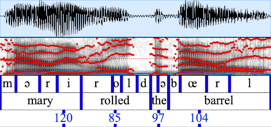

praatIO


A library for working with textgrid files in javascript.
Textgrids are containers for audio annotations. Annotations could include speech transcripts, phonetic information, noise events (e.g. door slams, laughter), impressionistic ratings, or numerical data (pitch values).
Each annotation layer is known as a tier. Tiers come in two varieties: point tiers and interval tiers.
Textgrids can be opened and manually edited with praat http://www.fon.hum.uva.nl/praat/
praatIO.js can read and write textgrid files and has various functions for modifying and querying textgrid files. Combined with an audio library, one could programmatically extract information or subsegments of an audio file.
Major revisions
Ver 2.0 (February 17, 2019)
- Complete rewrite
- New tree-shaking friendly API
- 100% of all praatIO.py main functions have been ported.
- Javadocs
- Tests
Ver 1.0 (December 31, 2018)
- Bugfixes and style refactoring (ES6)
- Passing linter and building
Ver 0.0 (June 06, 2015)
- Support for reading in a longform textgrid as JSON
- Handles both point tiers and interval tiers
Installation
npm install praatio
Documentation
Generated JSdocs can be found here:
Usage / Before Getting Started
Although the code is broken across several modules for organization, the whole api is exposed in the main import. E.g. all functions and classes can be imported like so:
import {
Textgrid, IntervalTier, PointTier, parseTextgrid,
serializeTextgrid, serializeTextgridToCsv
} from 'praatio'
Important for working with praatio is understanding the root classes: Textgrid, IntervalTier, and PointTier. IntervalTier and PointTier hold time and label information that describe events that occur over an interval or at discreet points in an audio file. A Textgrid is a container that can hold multiple tiers that contain different information about the same audio file.
For example, as shown in the following schematic, we could annotate one tier with the words spoken in an utterance, annotate another tier with phones (vowels and consonants), and in a third tier, annotate the max pitch value found in each word.

A Textgrid contains two important instance variables: tierDict and tierNameList. tierDict is an object of the form {tierName: tier, ...} that stores the Textgrid's tiers. Tiers are ordered and tierNameList maintains that order.
IntervalTiers and PointTiers are very similar. Both have only one important instance variable--an Array called entryList. The entryList for intervalTier looks like [[startTime, stopTime, label], ...] and the entryList for pointTier looks like [[time, label]...]. Most methods that operate on tiers work on both but some only work one or the other--in such cases, it is clearly indicated in the method name and arguments (compare takeTierUnion and takeIntervalTierDifference).
IMPORTANT When working with Textgrids and tiers, avoid modifying their state directly. Use the included functions if you need to modify them.
Here is a simple practical example of how to get durations of intervals in an IntervalTier:
import {parseTextgrid}
def printOutDurations(tgFileBuffer, tierName) {
let tg = parseTextgrid(tgFileBuffer);
let tier = tg.tierDict[tierName];
for (let i = 0; i < tier.entryList.length; i++) {
let entry = tier.entryList[i];
console.log(entry[1] - entry[0]);
}
}
Being able to iterate over a tier is the only thing that is needed from the tier itself. However, there are lots of methods provided for modifying or querying textgrids and tiers. These are summarized below and provided in more detail in the documentation.
Serializing
If you read a .TextGrid file into memory,
parseTextgrid can be used to convert that into a Textgrid instance.
To go the opposite direction, use serializeTextgrid which
returns the contents of a .TextGrid file as a string,
which can be written directly to a file.
serializeTextgridToCsv works similarly, but returns the textgrid
as a comma separate list of values. A textgrid cannot be fully
represented in a csv file, so you'll have to choose the tier
to 'pivot' from.
Methods
Here is a short summary of the provided functions. Please see the documentation for details: praatIO jsdocs page
The main data structures
- Textgrid, IntervalTier, PointTier
Functions that modify textgrids or tiers
- appendTextgrid, appendTier, cropTextgrid, cropTier, editTextgridTimestamps, editTierTimestamps, eraseRegionFromTextgrid, eraseRegionFromTier, insertSpaceIntoTextgrid, insertSpaceIntoTier, mergeTextgridTiers, takeTierUnion, takeIntervalTierDifference, takeIntervalTierIntersection,
Functions for comparing
- compareTextgrids, compareTiers, compareEntries, comparePoints, compareIntervals
Functions for copying
- copyTextgrid, copyTier
Functions for querying
- getValuesAtPoints, getValuesInIntervals, getEntriesInInterval, getNonEntriesFromIntervalTier, findLabelInTier
Defined exceptions
- NonMatchingTiersException, IncorrectArgumentException, TierExistsException, TierCreationException, TextgridCollisionException, OvershootModificationException, IndexException,
Constants
- INTERVAL_TIER, POINT_TIER, MIN_INTERVAL_LENGTH
For serializing
- parseTextgrid, serializeTextgrid, serializeTextgridToCsv, decodeBuffer,
Various utility functions
- doIntervalsOverlap, isClose, sortCompareEntriesByTime, entryListToTree, findIntervalAtTime, findPointAtTime